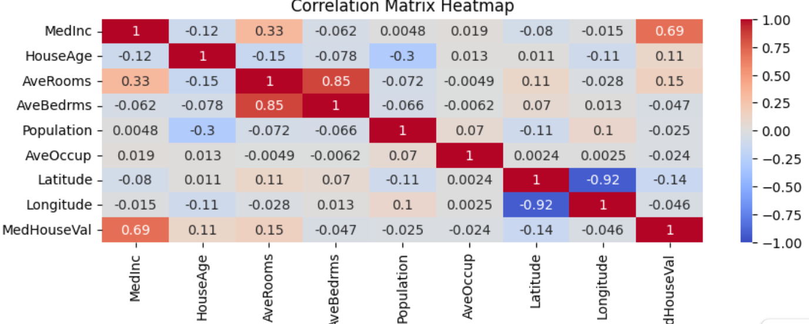

実績02：相関係数と重回帰分析
投稿日: 2026年5月22日
取り組んだこと
- 有名なカリフォルニア州の住宅に関するデータの分析を実施
- 相関係数で多重共線性を確認
- カラムを絞って重回帰分析を実施
学んだこと
- 多重共線性をデータで体感できた
- データを色々な角度から検討する重要性を実感した
実績01：GA4計測検証用Webサイト
投稿日: 2026年5月21日
取り組んだこと
- GitHub Pagesを使った外部公開用Webサイトの立ち上げ
- HTML5/CSS3による、スマホ対応（レスポンシブ）デザインの作成
- GA4（Google アナリティクス 4）の基本タグの設置
- 立体的なボタンアニメーションの実装
学んだこと
- 自分でコード（HTML/CSS）を触れ、ボタンクリックの「イベント計測」の仕込み方を学んだ
- 正確な計測ロジックへの理解が深まった